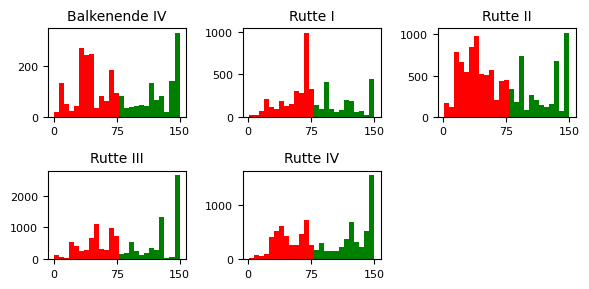

De verkiezingen komen eraan, en de Tweede Kamer heeft een open data portaal. Daar heb ik weer fijn gebruik van gemaakt en alle moties vanaf 2009 gedownload, t/m eind augustus 2023. Het zijn er om precies te zijn 39245. In dit blog kijk ik of er interessante inzichten uit te halen zijn.
Ontwikkeling van het aantal moties
Het aantal moties stijgt, met name het aantal aangenomen moties.
We kunnen ook histogrammen maken per kabinetsperiode. Hierin kunnen we zien hoeveel stemmen moties hebben gekregen.

In de histogrammen gaat het vooral om de verdeling van de moties tijdens de kamerperiodes. De rode moties hebben het niet gehaald, de groene wel.
- Rutte I: relatief veel moties die het nipt niet haalden
- Rutte II: veel afgewezen moties
- Rutte III: hele grote piek in het aantal unaniem aangenomen moties
Welke partij is de ‘tegenpartij’?
De oppositie steunt de meeste moties, terwijl de regering vaak tegen stemt.
Welke partijen dienen het meeste moties in en hoe succesvol zijn ze?
In bovenstaande grafiek zijn de partijen op elkaar gestapeld. Het aantal moties per jaar is sterk gestegen. De volgorde van de partijen is gebaseerd op vergelijkbaar stemgedrag, daar kom ik later op terug.
Deze visualisatie geeft weer hoeveel moties (niet) succesvol zijn ingediend. Je ziet bijvoorbeeld PVV en SP als partijen met veel moties, maar weinig succesvolle. Ook worden de moties van regeringspartijen vaker aangenomen. Dit komt natuurlijk doordat ze met de regeringspartijen een meerderheid hebben. Laten we nu kijken hoe deze grafiek eruit ziet per zetel, als een soort ‘productiviteit per zetel’.
Opvallend is het hoge aantal moties van BBB per zetel. Bij de VVD en D66 valt het lage aantal moties per zetel op. Dit zijn natuurlijk ook de regeringspartijen met het grootste aantal zetels, terwijl BBB momenteel 1 zetel heeft.
Wie zijn de ‘motiekanonnen’ van de Tweede Kamer?
Wie is nu het meest ‘succesvolle’ kamerlid?
- De Producent: Wiebren van Haga diende maar liefst 191 moties in per jaar, hiermee blijft hij Caroline vd Plas nipt voor (183 per jaar).
- De Winnaar: Pieter Grinwis van de ChristenUnie. Met 85 aangenomen moties het succesvolst. Caroline vd Plas (BBB) staat op plek twee met 66 successen per jaar, op de voet gevolgd door Stephan van Baarle (DENK) (44).
- De Samenwerker: Kijken we naar de politicus die het meeste moties heeft mede-ingediend staat Caroline vd Plas maar liefst 254 keer als mede-indiener vermeld.
Welke partijen werken samen?
Meestal worden moties ingediend door 1 partij (0 medeindieners dus), maar soms zijn er medeindieners. Er zijn twee moties met 19 medeindieners: Onderzoek minder dierenproeven en Inzien stukken Bijlmerramp
Heel duidelijk is te zien dat GroenLinks en PvdA samenwerken. Hierdoor vallen de andere samenwerkingen wat minder op.
Welke partijen lijken het meeste op elkaar qua stemgedrag?
In bovenstaande grafiek is het stemgedrag van alle partijen platgeslagen op één as met een zogenaamde Principal Component Analaysis. Deze as verklaart 33% van het stemgedrag en is dus verre van compleet. Of de staven positief of negatief zijn maakt niet uit, het gaat erom dat vergelijkbare partijen bij elkaar in de buurt liggen. Kennelijk liggen Groenlinks en FVD het meest van elkaar verwijderd.
Hieronder visualiseren we het stemgedrag op twee assen. Op deze manier kunnen we bijna 60% van het stemgedrag beschrijven (dus niet 100%!). Als twee partijen vlak bij elkaar liggen wil dus niet zeggen dat ze altijd hetzelfde stemmen. De horizontale as is groter omdat deze meer van het stemgedrag verklaart.
Er zijn grofweg 3 clusters te onderscheiden:
- De regeringspartijen bovenaan
- Het linkerdeel van de oppositie linksonder
- Het rechtse gedeelte van de oppositie rechtsonder
Welke partijen steunen elkaar?
Er moet ook gestemd worden natuurlijk! Boven zie je mooi een paar clusters van partijen die elkaar veel steunen in het stemgedrag. Omtzigt en BBB zijn interessant: links steunen wel regelmatig GroenLinks, PvdA en Volt, maar veel minder PvdD en BIJ1. Rechts steunen ze af en toe nog weleens PVV, Groep van Haga en FVD, terwijl deze onder de andere partijen nauwelijks steun krijgen.
In een volgend blog cluster ik de moties naar onderwerp. We onderzoeken welke partijen het meest actief & succesvol zijn op bepaalde onderwerpen. To be continued!
Broncode is te vinden op GitHub